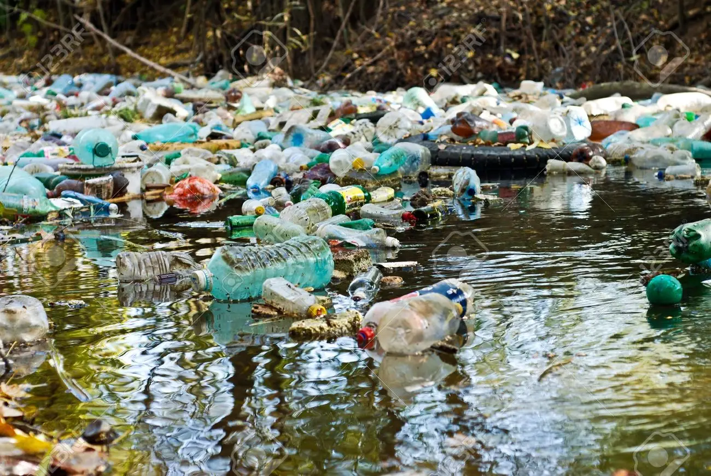

WATER POLLUTION

Some polluted water looks muddy, smells bad, and has garbage floating in it. Some polluted water looks clean, but is filled with harmful chemicals you can't see or smell.
Polluted water is unsafe for drinking and swimming. Some people who drink polluted water are exposed to hazardous chemicals that may make them sick years later. Others consume bacteria and other tiny aquatic organisms that cause disease. The United Nations estimates that 4,000 children die every day from drinking dirty water.
Sometimes, polluted water harms people indirectly. They get sick because the fish that live in polluted water are unsafe to eat. They have too many pollutants in their flesh.
There are some natural sources of water pollution. Oil and natural gas, for example, can leak into oceans and lakes from natural underground sources. These sites are called petroleum seeps. The world's largest petroleum seep is the Coal Oil Point Seep, off the coast of the U.S. state of California. The Coal Oil Point Seep releases so much oil that tar balls wash up on nearby beaches. Tar balls are small, sticky pieces of pollution that eventually decompose in the ocean.
Human activity also contributes to water pollution. Chemicals and oils from factories are sometimes dumped or seep into waterways. These chemicals are called runoff. Chemicals in runoff can create a toxic environment for aquatic life. Runoff can also help create a fertile environment for cyanobacteria, also called blue-green algae. Cyanobacteria reproduce rapidly, creating a harmful algal bloom (HAB). Harmful algal blooms prevent organisms such as plants and fish from living in the ocean. They are associated with “dead zones” in the world's lakes and rivers, places where little life exists below surface water.

Mining and drilling can also contribute to water pollution. Acid mine drainage (AMD) is a major contributor to pollution of rivers and streams near coal mines. Acid helps miners remove coal from the surrounding rocks. The acid is washed into streams and rivers, where it reacts with rocks and sand. It releases chemical sulfur from the rocks and sand, creating a river rich in sulfuric acid. Sulfuric acid is toxic to plants, fish, and otheraquatic organisms. Sulfuric acid is also toxic to people, making rivers polluted by AMD dangerous sources of water for drinking and hygiene.
Oil spills are another source of water pollution. In April 2010, the Deepwater Horizon oil rig exploded in the Gulf of Mexico, causing oil to gush from the ocean floor. In the following months, hundreds of millions of gallons of oil spewed into the gulf waters. The spill produced large plumes of oil under the sea and an oil slick on the surface as large as 24,000 square kilometers (9,100 square miles). The oil slick coated wetlands in the U.S. states of Louisiana and Mississippi, killing marsh plants and aquatic organisms such as crabs and fish. Birds, such as pelicans, became coated in oil and were unable to fly or access food. More than 2 million animals died as a result of the Deepwater Horizon oil spill.
Buried chemical waste can also pollute water supplies. For many years, people disposed of chemical wastes carelessly, not realizing its dangers. In the 1970s, people living in the Love Canal area in Niagara Falls, New York, suffered from extremely high rates of cancer and birth defects. It was discovered that a chemical waste dump had poisoned the area's water. In 1978, 800 families living in Love Canal had to abandon their homes.